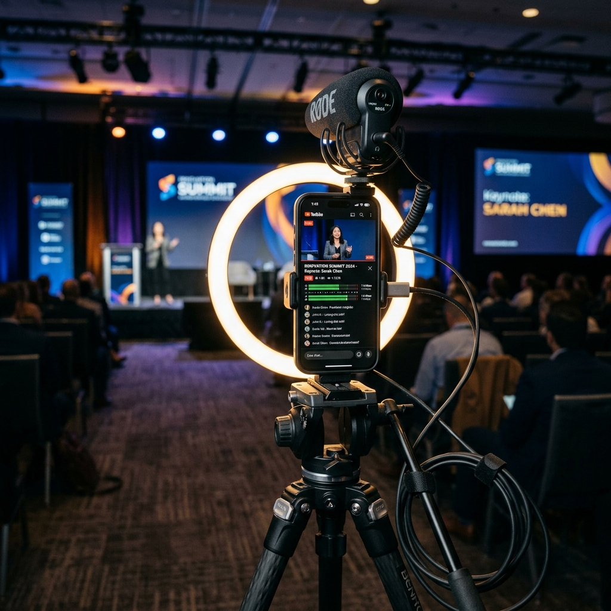

Producción de Video, Cobertura y Streaming Híbrido
Una solución llave en mano diseñada para garantizar la transmisión impecable de tu evento de 2 días.

Infraestructura técnica móvil de nivel profesional para streaming multistreaming y levantamiento B-Roll simultáneo.
Tranquilidad Absoluta: Nos Encargamos de Todo
Sabemos que organizar un evento corporativo involucra múltiples variables. Por eso, en MAW Soluciones adoptamos un esquema de solución integral llave en mano. Nosotros nos encargamos de toda la complejidad de la producción: desde la logística, el cableado y las pruebas de señal previas, hasta el monitoreo continuo de audio y video en vivo, y la entrega oportuna de los materiales listos para usar en tus redes sociales.
Producción de Video y Streaming
Despliegue de equipos móviles de última generación y microfonía profesional para una retransmisión óptima y cobertura de apoyo fluida.
Cámara 1: Transmisión en Vivo y Multistreaming (7 Horas/Día)
1 Smartphone de última generación (iPhone 17) montado en trípode. Operando como cámara principal exclusiva para el streaming directo. Emisión simultánea a las plataformas de Facebook, TikTok y YouTube. Cobertura de hasta 7 horas de transmisión diaria (pueden ser discontinuas por límites o restricciones de tiempo de las plataformas, pero cubriendo la totalidad del evento).
Cámara 2: Cobertura Audiovisual Dinámica (B-Roll)
Grabación simultánea en alta definición para capturar el ambiente general, los asistentes y los momentos clave. Operación en movimiento con iPhone 17 para tomas dinámicas en alta resolución.
Audio de Grado Profesional
Sistema de 2 micrófonos inalámbricos de solapa configurados para alimentar audio limpio y directo a la transmisión principal.
Interacción en Vivo (Streamer - Panelistas)
Configuración y dinámica interactiva en directo que permite la comunicación y retroalimentación activa entre el streamer / presentador de la transmisión y el panelista en el escenario.
Personal de Operación Dedicado
1 técnico especializado asignado al monitoreo de la señal, balance de audio y multistreaming en tiempo real, más 1 operador móvil asignado a tomas de apoyo y cobertura paralela.
Infraestructura de Conectividad
El streaming requiere una conexión a internet de subida robusta y constante. Elige el esquema de conectividad de tu preferencia:
Opción A: Red Provista por el Recinto/Hotel
Incluido en BaseUso de la conexión vía cable ethernet o red Wi-Fi compartida del hotel/recinto donde se llevará a cabo el evento.
Opción B: Red Autónoma y Respaldo 4G/5G
+ $1,500 MXNDespliegue de red independiente dedicada mediante módem-router portátil de alta velocidad durante toda la jornada.
Entregables y Post-Evento
Todo el contenido generado en el evento es procesado y resguardado para su entrega digital en alta resolución.
Transmisión en Vivo
Emisión simultánea de 7 horas por día en Facebook, TikTok y YouTube (pueden ser discontinuas por límites de plataforma, cubriendo todo el evento).
Interacción Streamer
Interacción activa en vivo y en directo del streamer/presentador con los panelistas durante el desarrollo del evento.
Videos en Bruto (Drive)
Todo el material de video crudo registrado, organizado por días y por secciones, entregado mediante un enlace privado de Google Drive.
5 Videos de Memoria
Clips dinámicos en formato vertical optimizados para Reels y TikTok. Se enviará la propuesta de speech para aprobación previa antes de editar.
Sesión Fotográfica
50 elementos fotográficos profesionales que cubren retratos de los panelistas, ambiente general del público, comida/catering, etc.
Plazo y Entrega
Acceso a la nube con todo el material digital entregado formalmente en un plazo de 24 a 48 horas tras finalizar el evento.
¿Qué incluye nuestro servicio de principio a fin?
Montaje y Pruebas Previas
Llegamos antes del evento para realizar pruebas de señal de internet y balancear el audio.
Monitoreo Técnico Activo
Un operador supervisa constantemente la tasa de bits (bitrate) para prevenir pixelación o cortes de flujo.
Coordinación Multistreaming
Configuración de retransmisores para que tu evento aparezca simultáneamente en diferentes redes oficiales.
Desmontaje y Respaldo
Una vez concluido el evento, resguardamos de forma segura las grabaciones físicas en discos locales.
Propuesta Comercial
Cotización Personalizada
Propuesta válida por 30 días naturales